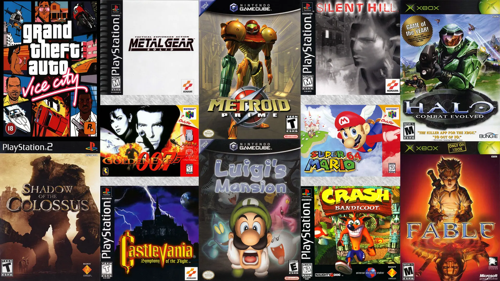

Tennis for Two
„Tennis for Two” bija elektroniska tenisa spēle, ko Brukheivenas laboratorijas apmeklētāji varēja spēlēt uz osciloskopa ekrāna.
No tenisa spēles osciloskopa ekrānā līdz virtuālajai realitātei. Spēles un ierīces, kas mainīja to, kā mēs spēlējam.

Par izstādi
Vietai, kur spēlējām, ilgi bija nozīme. Sākumā spēli varēja izmēģināt laboratorijā vai spēļu automātu zālē. Mājas konsoles to pārcēla pie televizora, bet pārnēsājamās ierīces ļāva spēlēt arī ceļā.
Izstāde iepazīstina ar spēlēm un ierīcēm, kas iezīmē šīs pārmaiņas, un rāda, kā līdz ar ekrāniem un pultīm mainījušies arī spēlēšanas paradumi.
„Tennis for Two” apmeklētājiem ļāva pašiem izmēģināt, ko var izdarīt ar analogo datoru un osciloskopu.
„Magnavox Odyssey” pieslēdza pie televizora, kamēr „Pong” popularitāti ieguva spēļu automātu zālēs.
„Space Invaders” kļuva par vienu no spēlēm, kas piesaistīja lielu publiku automātu zālēm.
„Famicom” aizsāka Nintendo mājas konsoļu paaudzi, ko ārpus Japānas iepazina kā „NES”.
„Game Boy” pārnesa konsoļu spēles uz nelielu ierīci ar baterijām.
„PlayStation” palīdzēja 3D spēlēm no spēļu automātiem nonākt arī dzīvojamā istabā.
„Wii” spēlēs ierastas darbības varēja veikt ar žestiem.
VR un mākoņspēles piedāvā jaunus veidus, kā spēlēt un piekļūt spēlēm.
Rādīti 11 no 11 eksponātiem.
„Tennis for Two” bija elektroniska tenisa spēle, ko Brukheivenas laboratorijas apmeklētāji varēja spēlēt uz osciloskopa ekrāna.
„Spacewar!” ir MIT radīta datorspēle, kurā divi spēlētāji vada kosmosa kuģus un cīnās viens pret otru.
„Pong” kļuva par spēļu automātu zāļu hitu. „Magnavox Odyssey” tajā pašā gadā ļāva spēlēt arī uz televizora mājās.
„Space Invaders” piesaistīja spēlētājus automātu zālēm ar vienkāršu uzdevumu atvairīt citplanētiešu rindas.
„Nintendo Famicom” iznāca Japānā. „NES”, tās radniecīgā versija, vēlāk palīdzēja atdzīvināt mājas konsoļu tirgu Ziemeļamerikā.
„Nintendo Game Boy” ļāva paņemt spēles līdzi. „Tetris” kļuva par vienu no spēlēm, ar ko šo konsoli visbiežāk saista.
„Sony PlayStation” vispirms iznāca Japānā un palīdzēja popularizēt CD spēles un 3D grafiku mājas konsolēs.
„Microsoft Xbox” iezīmēja Microsoft ienākšanu mājas konsoļu tirgū. Turpmākajos gados spēlēšana tiešsaistē kļuva par svarīgu konsoļu funkciju.
„Nintendo Wii” uztvēra pults kustības, tāpēc spēlētājs varēja atvēzēties tā, it kā turētu tenisa raketi.
Viedtālruņi un lietotņu veikali ļāva lejupielādēt un spēlēt spēles ierīcē, ko cilvēki jau nēsāja kabatā.
Virtuālās realitātes brilles ļauj skatīties apkārt spēles pasaulē, savukārt mākoņspēles straumē no attālināta datora.